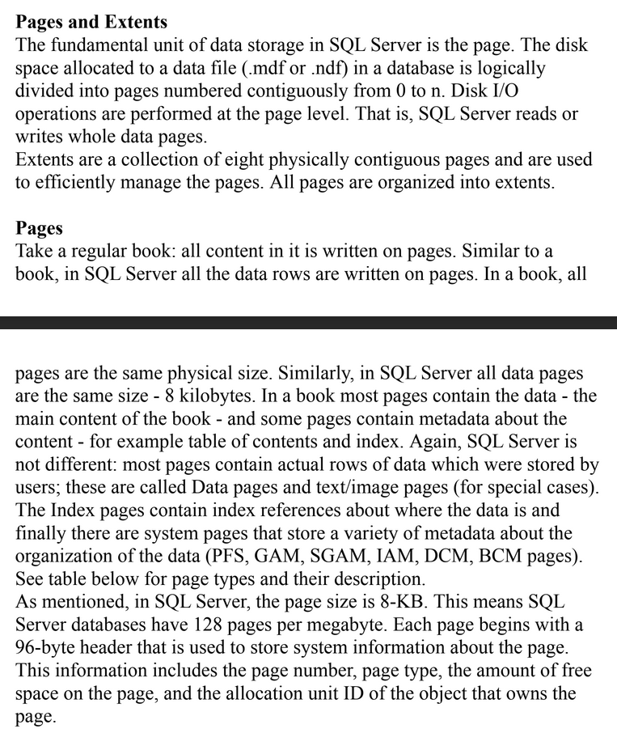
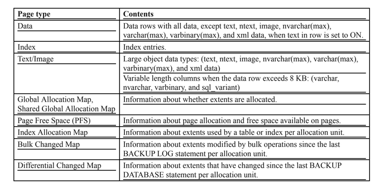

SQL-datove-typy
Základní pojmy
Datové typy definují typy dat použitých ve sloupci
zařizují základní integritu dat
Typy datových typů
Stringové
Definují textové řetězce
CHAR, VARCHAR
Numerické
Definují číselné typy
BOOL, INT
Datové
Definují datum a čas
DATE, DATETIME
MySQL
Stringové
(VAR)CHAR
(TINY/MEDIUM/LONG)TEXT
(TINY/MEDIUM/LONG)BLOB
ENUM
Numerické
BOOL
(TINY/SMALL/MEDIUM/BIG)INT
DOUBLE
Datumové a časové
DATE
DATETIME
TIME
YEAR
Oracle
Stringové
CHAR
(N)VARCHAR2
LONG
Numerické
NUMBER
Datumové a časové
DATE
MONTHS_BETWEEN(x,y) --> Vrátí číselnou hodnotu měsíců mezi datumem x a y
ADD_MONTHS(x,int) --> Přidá int měsíců k datumu x
CURRENT_DATE --> Vrátí dnešní datum
TO_CHAR, TO_DATE --> Přemění datum na char a char na datum
INTERVAL YEAR TO MONTH -->Defaultní precision 2 (Jestli máme hodnotu delší jak 2 místa, musíme změnit precision v závorkách)
INTERVAL ‘9’ YEAR --> 9 Let
INTERVAL ‘40’ MONTH --> 40 měsíců
INTERVAL ‘120-3’ YEAR(3) TO MONTH --> 120 let a 3 měsíce
INTERVAL DAY TO SECOND --> Stejné jak u YEAR TO MONTH, vždy jen uvedeš k čemu se zrovna přiřazuje hodnota (DAY,HOUR, MINUTE, SECOND)
MSSQL
Stringové
CHAR
VARCHAR
TEXT
Numerické
TINY/SMALL/BIG)INT
BIT
FLOAT
Datumové a časové
DATE
DATETIME
TIME
Stránky
 